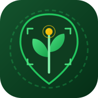

AgriScan AI - कृषि सहायक
ऑफ़लाइन खेत में बिना इंटरनेट काम करता है
मेरा खेत प्रोफाइल (लॉगिन आवश्यक नहीं)
बिना किसी पासवर्ड या OTP के सभी सेवाएं 100% निःशुल्क खुली हैं। सटीक सलाह के लिए अपना राज्य, फसल और जमीन माप चुनें:
निःशुल्क स्मार्ट अलर्ट (FCM Push Notifications)
मेरा डेटा, मेरा अधिकार (DPDP गोपनीयता सुरक्षा)
आपका डेटा किसी खाद-दवा कंपनी को कभी नहीं बेचा जाता। आप कभी भी अपना डेटा डाउनलोड या डिलीट कर सकते हैं: